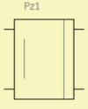
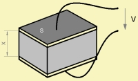
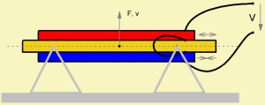

Piezo Driver
| Home | LE-Part | Electro-acoustic |
 |
 |
 |
 Crystal |
 Bimorph configuration |
Piezo Driver is a four-pole-component featuring an electro-acoustic transducer with piezo motor.
Parameters
| Caption | String | Name of component |
| Formula | String | Formula of parameters |
| Diaph front | Ref or size | Diaphragm size of front side |
| Diaph rear | Ref or size | Diaphragm size of rear side |
| Mms | kg | Mass of vibrating assembly |
| Kms | N/m | Total stiffness of suspensions |
| Rms | Ns/m | Mechanic resistance |
| fs | Hz | Fundamental Resonance |
| Qms | Mechanical Quality Factor | |
| Creep | Factor of creep-formula | |
| F/V | N/V | Force factor |
| Cp | F | Piezo capacitance |
The port to the left is of the electric domain. The marked connection indicates that the excursion is in phase with the electrical signal.
The port on the right hand side is driving the acoustic domain. The acoustic port is special because one terminal stands for the front side of the diaphragm and the other terminal for the rear. In practice this means that we connect to the top terminal any acoustic component which shares the sound pressure at the front of the diaphragm. To the bottom terminal we connect acoustic components which have the same pressure at the rear.
The motor consists of a special crystal configuration, which deflects if a voltage is applied, and thus generate the force F at the attached mass. The conversion-factor of the piezo-driver is F/V, i.e. force divided by voltage.
Cp represents the piezoelectric capacitance.
Kms is the mechanical stiffness of the vibrating system, including the stiffness of the crystal configuration and the suspension of the diaphragm.
See also
LE Diaphragm Derivation, LE Mechanical Parameters
Formula
The name of the parameters are equal to the formula-identifiers:
|
| |||||||||||||